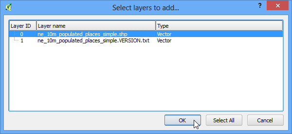
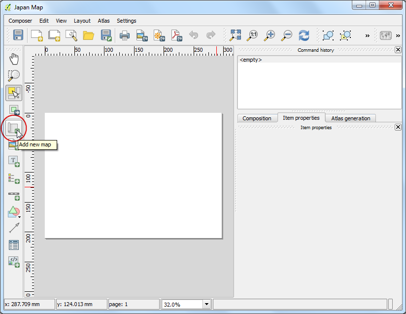

Interpolarea Datelor de tip Punct
Interpolarea este o tehnică GIS utilizată, în mod curent, pentru a crea suprafețe continue de puncte discrete. O mulțime de fenomene din lumea reală sunt continue - elevațiile, solurile, temperaturile etc. Este imposibil să efectuăm măsurători pe întreaga suprafață, atunci când dorim să modelăm aceste suprafețe, în scopul analizării ulterioare. De aceea, măsurătorile din teren se fac în diverse puncte, de-a lungul suprafeței, iar valorile intermediare sunt deduse printr-un proces numit ‘interpolare’. În QGIS, interpolarea este realizată cu ajutorul Pluginului de Interpolare, nativ.
Privire de ansamblu asupra activității
Vom folosi datele Lacului Arlington din Texas, măsurate în teren, pentru a crea o hartă a elevației reliefului și a curbelor de nivel.
Alte competențe pe care le veți dobândi
Crearea curbelor de nivel cu ajutorul datelor de tip punct.
Mascarea valorilor nule dintr-un strat raster.
Adăugarea etichetelor în straturile vectoriale.
Procedura
Deschideți QGIS. Mergeți la

Navigați la fișierul descărcat, Shapefiles.zip, apoi selectați-l. Clic pe Open.

În fereastra de dialog Select layers to add..., țineți apăsată tasta Shift, apoi selectați straturile Arlington_Soundings_2007_stpl83.shp și Boundary2004_550_stpl83.shp. Clic pe OK.

Veți vedea 2 straturi încărcate în QGIS. Stratul Boundary2004_550_stpl83 reprezintă limitele lacului. În Cuprins, debifați căsuța de lângă acesta.

În acest fel, veți putea observa datele celui de-al doilea strat Arlington_Soundings_2007_stpl83. Ceea ce se vede arată similar unor linii, dar de fapt este doar o serie de puncte foarte apropiate.

Efectuați clic pe pictograma Zoom și selectați o mică arie de pe ecran. Pe măsură ce veți mări imaginea, veți observa punctele. Fiecare punct reprezintă o citire luată de o Sondă de Adâncime într-o locație înregistrată de un echipament DGPS.

Selectați instrumentul Identify și faceți clic pe un punct. Veți vedea panoul cu Rezultatele Identificării apărând în partea stângă, alături de valoarea atributului punctului. În acest caz, atributul ELEVAȚIE conține adâncimea lacului la acea locație. Deoarece sarcina noastră este de a crea un profil de adâncime și curbele de nivel, vom folosi aceste valori ca intrare pentru interpolare.

Asigurați-vă că Plugin-ul Interpolare a fost activat. Parcurgeți Utilizarea Plugin-urilor pentru a vedea cum se activează plugin-urile. După activare, mergeți la .

În fereastra de dialog Interpolation, selectați Arlington_Soundings_2007_stpl83 pentru Vector layers în panoul Input. Selectați ELEVATION ca Interpolation attribute. Apăsați Add. Schimbați valorile Cellsize X și Cellsize Y la 5. Această valoare este dimensiunea fiecărui pixel din grila de ieșire. Deoarece datele noastre sursă sunt într-un CRS proiectat, cu unități Feet-US, pe baza selecției noastre, dimensiunea grilei va fi de 5 metri. Faceți clic pe butonul ... de lângă Output file și denumiți fișierul de ieșire ca elevation_tin.tif. Faceți clic pe OK.
Note
Rezultatele interpolării pot varia semnificativ în funcție de metoda și parametrii pe care îi specificați. QGIS acceptă metodele de interpolare (TIN) Rețele Neregulate Triangulate și (IDW) Distanța inversă ponderată. Metoda TIN este frecvent utilizată pentru datele de elevație, în timp ce metoda IDW este folosită la interpolarea altor tipuri de date, cum ar fi concentrațiile de minerale, populațiile etc. Parcurgeți documentația modulului de Analiză Spațială din QGIS pentru mai multe detalii.

Veți vedea noul strat, elevation_tin, încărcat în QGIS. Efectuați clic-dreapta pe strat, apoi selectați Zoom to layer.

Acum, veți vedea extinderea completă a suprafeței create. Interpolarea nu dă rezultate precise în afara zonei de colectare. Haideți să decupăm suprafața rezultată după limitele lacului. Mergeți la .

Alegeți elevation_tin_clipped.tif pentru Output file. Selectați Mask layer pentru Cliiped mode. Selectați Boundary2004_550_stpl83 ca Mask layer`. Clic pe OK.

Un nou raster, elevation_tin_clipped``va fi încărcat în QGIS. Vom stiliza acum acest strat, pentru a reprezenta diferența între elevații. Notați valorile minime și maxime ale elevației pentru stratul ``elevation_tin. Faceți clic dreapta pe stratul elevation_tin_clipped, apoi selectați Properties.

Deschideți fila Style. Selectați Singleband pseudocolor pentru Render type. În secțiunea Generate new color map, selectați rampa de culoare Spectral. Deoarece dorim să creăm o hartă a adâncimilor, nu una a înălțimilor, bifați caseta Invert. Acest lucru va atribui nuanțe de albastru zonelor de profunzime și nuanțe de roșu pentru zonele de mică adâncime. Faceți clic pe Classify.

Treceți la fila Tranparency. Vrem să eliminăm pixelii negri din rezultatul nostru. Introduceți 0 pentru Additional no data value. Faceți clic pe OK.

Acum aveți o hartă a elevației reliefului pentru lac, generată din citirile individuale ale adâncimilor. Haideți să generăm curbele de nivel. Mergeți la .

În fereastra de dialog Contour, introduceți contours pentru Output file for contour lines. Vom genera curbele de nivel la intervale de 5ft, astfel ca veti introduce 5.00 pentru Interval between contour lines. Bifați caseta Attribute name. Clic pe OK.

Curbele de nivel vor fi încărcate din stratul contours o dată ce prelucrarea este încheiată. Faceți clic dreapta pe strat si selectați Properties.

Mergeți la fila Labels. Bifați caseta Label this layer with și selectați câmpul ELEV. Selectați Curved pentru tipul Plasamentului și efectuați clic pe OK.

Veți vedea că fiecare curbă de nivel va fi etichetată în mod corespunzător, afișând cota de-a lungul liniei.